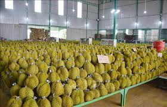
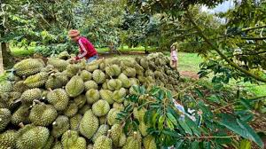

Cập nhật mới nhất về sản lượng và thị trường xuất khẩu

Đắk Lắk hiện là một trong những vùng trồng sầu riêng lớn nhất Việt Nam.Trong năm 2026, diện tích canh tác tiếp tục tăng mạnh nhờ nhu cầu xuất khẩu sang thị trường Trung Quốc và các nước Đông Nam Á. Các giống nổi bật gồm Ri6, Dona và Musang King đều cho năng suất cao và chất lượng ổn định.Năm 2025, Đắk Lắk vươn lên khẳng định vị thế “thủ phủ” sầu riêng với diện tích gần 45.000 ha (chiếm ¼ diện tích cả nước), sản lượng ước đạt 390.000 tấn, mang về doanh thu xuất khẩu ước tính 1,1 tỷ USD.Giống chủ lực: chủ yếu là giống sầu riêng Dona ( chiếm đa số, phục vụ xuất khẩu vì cơm dày, ráo) và sầu riêng Ri6 ( thơm béo, phục vụ tiêu dùng nội địa)
- Phụ thuộc nhiều vào thị trường Trung Quốc, khi nước này siết kiểm tra chất lượng, thay đổi quy định nhập khẩu, giảm nhu cầu mua thì giá sầu riêng trong nước giảm rất nhanh
- Nhiều diện tích trồng sầu riêng tại Đăk Lăk vẫn chưa được cấp mã số vùng trồng hoặc chưa đáp ứng đủ tiêu chuẩn xuất khẩu, việc sản xuất còn nhỏ lẻ và dễ bị thương lái ép giá
- Do lợi nhuận cao nên nhiều hộ dân ồ ạt chặt bỏ các cây trồng khác ( như cà phê, tiêu) để trồng sầu riêng, dẫn đến nguy cơ cung vượt cầu
- Biến đổi khí hậu hiện nay đang tác động lớn đến việc trồng sầu riêng tại Đăk Lăk. Tình trạng nắng nóng kéo dài, thiếu nước mùa khô và mưa trái mùa làm ảnh hưởng đến năng suất cũng như chất lượng.

Hecta trồng sầu riêng
Tấn sản lượng mỗi năm
Xuất khẩu sang Trung Quốc